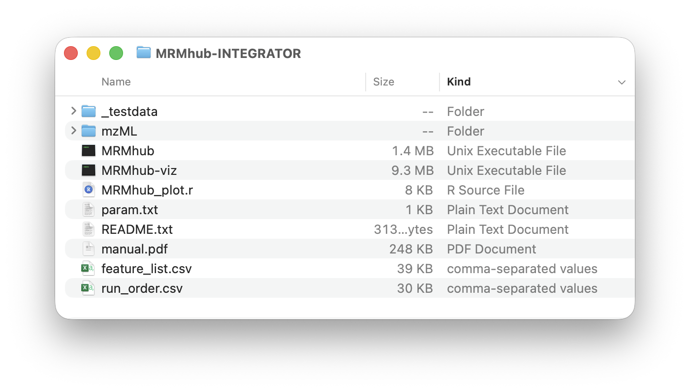
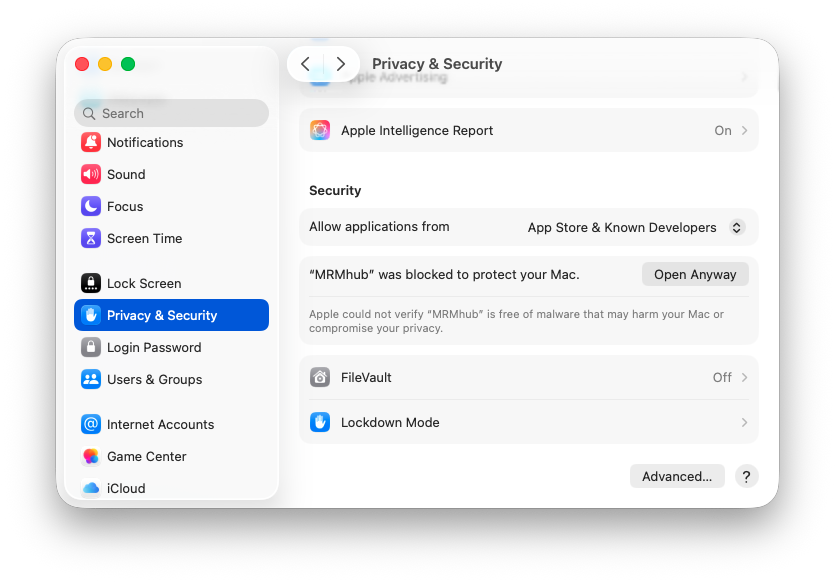
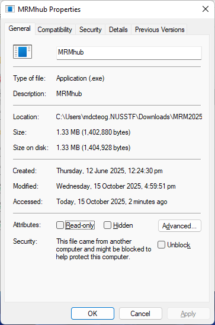

Installation
INTEGRATOR is a self-contained, portable executable and requires no installer: the application is downloaded, unzipped, and run from a folder, with one copy kept per analysis project (see below).
System requirements
Pre-compiled binaries are provided for macOS (Apple silicon and Intel), Windows 11 (x86-64) and Linux (x86-64). A multi-core CPU is recommended, as the integration is parallelised. Memory requirements are 8 GB minimum, 16 GB recommended for large projects. The application itself occupies minimal disk space, but the integration outputs — internal files (the misc/ folder), result tables, and generated PDFs — can require considerable space depending on dataset size.
INTEGRATOR itself has no runtime dependencies. The following external tools may be required:
- mzML conversion — ProteoWizard MSConvert (Windows only), see mzML conversion.
- PDF chromatogram plotting — an R installation. Download the installer from CRAN; no additional R packages are required.
Download
Pre-compiled executables for macOS, Windows and Linux are available from the GitHub releases page. Each release offers two downloads per platform: MRMhub-<version>-<platform>.zip contains the executables — MRMhub (MRMhub-INTEGRATOR) and MRMhub-viz (integration viewer app) — the MRMhub_plot.r R script and template input files (param.txt, run_order.csv, feature_list.csv); MRMhub-demo-<version>-<platform>.zip additionally contains the complete demo dataset. On macOS, aarch64-apple-darwin is the build for Apple silicon (M-series) Macs and x86_64-apple-darwin the build for Intel Macs; the chip is listed under Apple menu → About This Mac.

Clearing the first-launch security prompt
The executables are unsigned, so a security prompt appears on first launch — on macOS the developer “cannot be verified”, on Windows the file is “blocked”. This does not indicate an issue with the software.
To clear the security block, the following must be done for each downloaded executable:
- macOS (left) — System Settings → Privacy & Security → click Open Anyway.
- Windows (right) — right-click executable → Properties → tick Unblock (if present) → OK.


Verify the installation
Every release offers a demo download with a dataset and input files that runs end-to-end without further preparation — the quickest confirmation that the installation works. See Demo.
Setting up a peak integration project
The unzipped folder can serve directly as a peak-integration project — a self-contained folder holding the executables, the input files, and the raw data. The mzML files are placed in a subfolder (e.g. mzML/, as specified in param.txt). The three input files (param.txt, run_order.csv, feature_list.csv) must be edited to the specific dataset — its samples, features, and integration settings — as described in Input Files. The integration is then run within this folder — see Processing Workflow for the processing steps.
my-project/
├── MRMhub.exe / .app ← peak-integration executable
├── MRMhub-viz.exe / .app ← results visualiser (optional)
├── MRMhub_plot.r ← R script for chromatogram PDFs (optional step 4)
├── param.txt ┐
├── run_order.csv ├ input files (see Input Files)
├── feature_list.csv ┘
└── mzML/ ← the converted .mzML data filesA project folder assembled and ready to run. Files added by a run are documented in Processing Workflow.
A separate copy of INTEGRATOR is kept in each project, with its data and input files, so the analysis stays reproducible and transferable. As parameters and input-file formats may change between versions, keeping the executable with the project also ensures the input files match the version that produced the results.
Updating INTEGRATOR
To update INTEGRATOR, replace the executables in the project folder with a newer release. New versions are mostly backward-compatible, but may occasionally require adapting the input files, as new functionality may add or change parameters.
See also
- Edit the input files —
param.txt,run_order.csv, andfeature_list.csv. - Processing Workflow — the four processing steps.